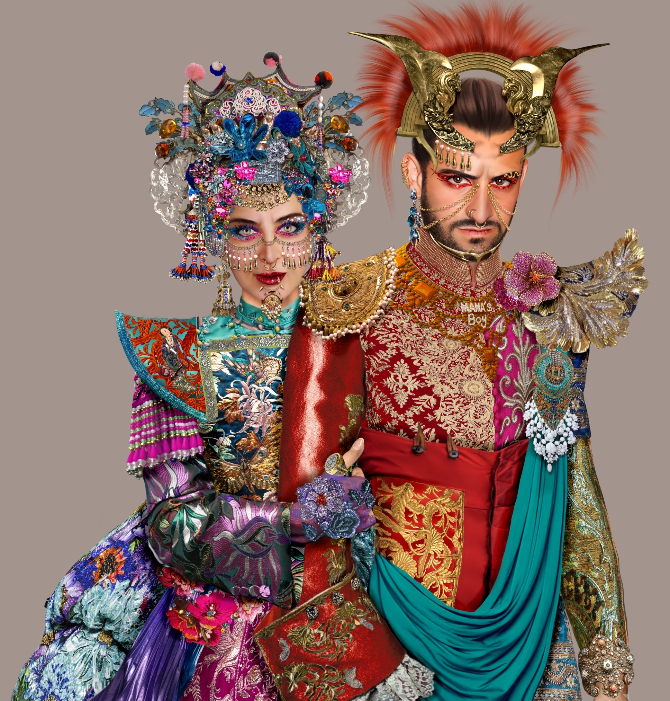

Iconic — a fresco of transgression
Artist · Art Historian · Digital Image-Maker
Beirut · Paris · Rome
Enter the seriesBio
At the intersection of classical visual culture and contemporary digital practice.
Bassam Anouti is a multidisciplinary artist, art historian, educator and digital image-maker whose work is shaped by a broad academic and creative formation across art history, French literature, clinical psychology, fine arts, fashion design, jewelry design and graphic design.
His practice brings together research, image-making and visual storytelling. Working across photography, digital painting, compositing and mixed media, Anouti develops images that are both constructed and narrative. His work is grounded in historical, anthropological, literary and mythological research, without being limited to illustration. Each image is conceived as a visual situation in which characters, symbols and cultural references enter into tension.
Narration plays a central role in his artistic language. The figures and scenes he constructs establish a dialogue with the viewer, opening a space of interpretation rather than delivering a fixed meaning. His images often operate through confrontation, ambiguity and psychological intensity, allowing the spectator to participate in the story being staged.
Alongside his artistic practice, Anouti has developed a strong pedagogical practice in the visual arts, with a focus on contemporary image-making, digital tools and creative methodologies. He has also worked with UNDP as a trainer and mentor, contributing to programs dedicated to visual development and digital creation.
Philosophy
Having come of age in the chaos of the Lebanese Civil War, Anouti witnessed disorder firsthand. His response has been to make work that is cérébrale, ordonnée et réfléchie — cerebral, ordered, and reflective — a deliberate counter-narrative to the socio-political and human disorder he lived through.
Drawing on principles of psychology, his art-making functions as an intellectual exercise: by imposing meticulous structure, symmetry, and thought, he symbolically mends the fractures of a broken world. His compositions are concept-driven and highly deliberate, the inverse of the randomness of a war-torn reality.
His art stages a dialogue between Eastern and Western iconography — weaving Babylonian and Levantine mythologies through European technique, juxtaposing the ancient with the modern. Anouti assumes an audience with artistic and literary appreciation, and a historical understanding of Eastern and Western cultures, as well as their symbolism.
Method
Each work begins with extensive anthropological and historical research into the chosen iconic figure — their mythology, cultural context, and symbolic resonance across civilizations.
The figures are then staged through photography, where models from the artist's entourage pose in carefully assembled costumes. Folk and historical dress, fabrics, and colors are chosen for their universal symbolism. Photographs are taken in both Lebanon and France.
These photographs become the foundation for digital painting and compositing across several graphics programs. The result is printed as a single artwork using ultraviolet light, then reworked by hand with traditional fine-art techniques.
Anouti works across digital and traditional tools: Adobe Photoshop, Procreate, ArtStudio, and Adobe Illustrator on iPad form the core of his digital practice, complemented by acrylic, ink, and gold leaf applied in the final stages of each piece.
The results are mixed-media in the broadest sense: photographic realism beside stylized digital illustration, typographic and geometric motifs, colors and forms balanced with a graphic designer's eye.
There is a noticeable influence of pop art and collage — cut-out historical personas re-contextualized in new settings — alongside the visual languages of antiquity: Mesopotamian symbols, classical sculpture, and calligraphic scripts embedded in the digital canvas.
The Series
The dark bent of human nature, in all its glorious malevolence.
Iconic I is the first chapter of a large fresco featuring legendary, folkloric, mythical and historical characters who have left a mark on history and on the collective imagination.
The themes are woven around unhealthy passions, transgressed taboos, rape, murder, incest, regicide, matricide, infanticide, fratricide and parricide. The artist tries to capture the magnificence of monstrosity — a XXth–XXIst century trend in which transgressive figures, beyond good and evil in the nietzschean sense, are glamorized, looked upon, and put on a pedestal.
This fresco transcends time and space, hence the anachronistic appearance of its figures, which speaks to the universality of the icon. These figures no longer belong to a specific culture or space-time, but to all civilizations — the reflection of a true humanity, faithful to its most archaic and most vile impulses.
A trend of the second half of the XXth century is the reversal of the traditional values of good and evil in Western culture. Good is treated as an irrelevant value, and Evil becomes the norm for new generations — put on a pedestal and glamorized.
The result of in-depth research in mythology, history, politics, folklore, literature and anthropology, the series was built from photographs taken in Lebanon and France. Folk and historical costumes, fabrics and colors are all chosen for their universal symbolism, then transformed through digital painting and compositing.
The results are printed as a single artwork using ultraviolet light before being reworked using traditional fine-art techniques by the artist.
Works
Selected
Centre Paris Anim' Mercœur, Paris
Solo exhibition as part of a cultural festival celebrating Lebanese heritage. Featured 71 small mixed-media paintings (acrylic, ink, and gold leaf) blending pop art and contemporary styles. The works depicted iconic figures from 1980s Lebanon — celebrities, political figures, and even manga characters — all set against backdrops of Islamic and Christian art motifs, bridging generational gaps through art. Covered by L'Orient-Le Jour.
International Online Group Exhibition
Digital artworks responding to lines of a poem with visual interpretations, exhibited alongside artists worldwide. Pieces included "I Am an Eagle Playing with the Wind" and "I Am a Deer Standing Away in the Dusk" — poetic, metaphor-driven digital works translating words into imagery.
Series — Mixed media on UV print
The first chapter of a large fresco featuring 18 works across History, Mythology, Ancien Testament, and Folklore. Legendary, folkloric, mythical and historical figures staged through photography, digital painting, and traditional fine-art techniques.
Series — Digital & Mixed Media
A series incorporating mythological creatures and symbols, continuing the artist's exploration of ancient lore and legend through contemporary digital techniques.
Background
Education
Art History, Fine Arts & Design
Research
MPhil — Art History
Training
Special Program in Art
Teaching
Instructor — Art & Design
Teaching
American University of Science & Technology
Teaching
Art Centre, Beirut